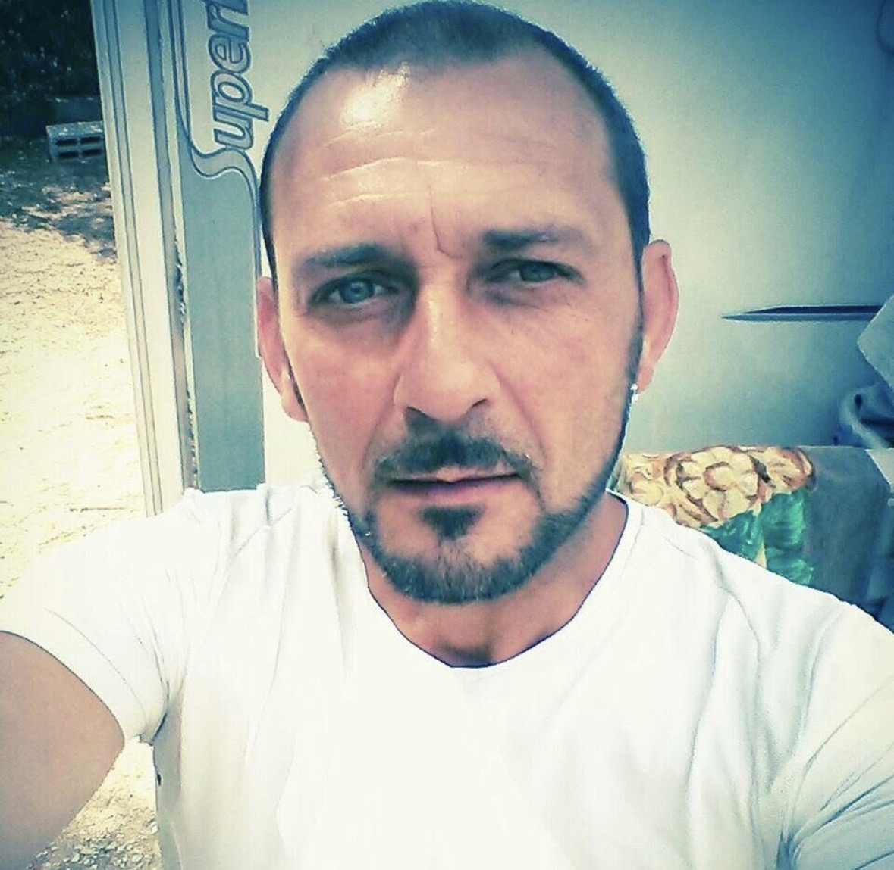
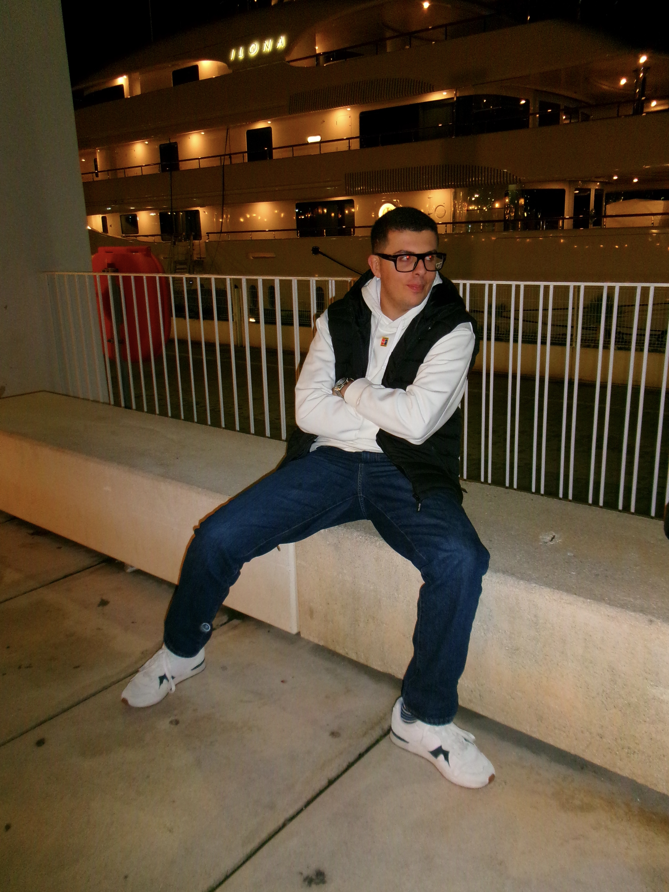

NEXT ONE
una nuova delirante passione amorosa
Domande e risposte in stile L’Eredità: in base alle risposte che darai, alla fine uscirà il profilo del tuo futuro caliente sposo.
Tre profili.
Una sola regina.
3 profili si contenderanno la tua calda e passionale mano. La tua bellezza sfrenata seconda solamente a quella dell’immensa Tata Matilda.
Ai tuoi outfit estremamente curati con il fustagno che domina gli spazi erotici della mente dei tuoi spasimanti.
Il tuo futuro armadillo rampante quale caratteristica deve avere assolutamente?
Scegli la risposta che ti conquista di più.
La marca di mutande che ti fa girare la testa e ti porta nel paradiso delle tentazioni:
Scegli la risposta che ti conquista di più.
La frase più dolce e inaspettata che ti potrebbe far vacillare in 12 secondi:
Scegli la risposta che ti conquista di più.
Il posto più romantico in cui vorresti essere portata per una cena
Scegli la risposta che ti conquista di più.
Quale hobby rende sexy il tuo uomo ideale:
Scegli la risposta che ti conquista di più.
Una questione di pulizia. Ogni quanti giorni si deve fare la doccia il tuo opossum predatore?
Scegli la risposta che ti conquista di più.
Un conto cointestato. Lui si avvicina e ti sussurra: «Amore è ora, cointestiamoci». Quale RAL è necessaria per far sì che l’uomo ideale si cointesti con te?
Scegli la risposta che ti conquista di più.
Una passione sfrenata per il tuo corpo. Il tuo fisico spicca fra i corpi del PCM (pensa le altre come stanno messe). Tu sei ossessionata dai complimenti che ti fanno su quale parte in particolare:
Scegli la risposta che ti conquista di più.
Il regalo di Natale. Lui è un po' impacciato ma ci prova comunque. Vuole sorprenderti. Dice. A quale sorpresa non resisti proprio:
Scegli la risposta che ti conquista di più.
Il suo colore preferito. Uno di questi colori è il suo preferito e probabilmente è anche il tuo. Scegli attentamente:
Scegli la risposta che ti conquista di più.
L’uomo navigato: Fiasca

Foto da aggiungereSe solo avesse 30 kg in meno, 30 anni in meno e un dente ti farebbe na corte spietata come le sue risposte quando scazza al telefono con i DM. Lui vuole la tua felicità come la pensione ed è pronta a renderti la regina di Sesto San Giovanni con il petto villoso che sporge affacciandosi da quel petto da uomo navigato. È il sogno di chi non sa come si chiamino gli incubi.
Il presunto apicale: Casalicchio
Presunto o tale, è l'uomo che vive per aspettarti in trasferta e catturarti con le sue catene spirituali e con quelle reali. Ti offre un caffé con la scusa di poterti stregare con la sua R moscia, il suo charme nell'esporre i miglioramenti del nucleo e del suo futuro e la sua innata straripante qualità di farti sentire l'unica fra le 2000 a cui ha ammicato. Debordante
L’uomo dalle gambe aperte: Cata

Vive a gambe aperte e soffre costantemente di dolori alla palla destra. Ma ha anche piccoli difetti. Sicuramente non quello di farti sapere quanto gli fai vomitare o quanto è bravo a capire dove sia realmente il nucleo nel PCM. Non è per niente ruffiano o paraculo. Ha un rapporto strettissimo e inossidabile con i suoi colleghi del PCM, il che renderebbe agile la sua integrazione in quel mattatoio. Soprattutto con Richichi. Vuole prima una crepes ben ripiena con gelato e nutella e poi forse ti ascolta. Non ha diamantini particolari ma sogni grandi quanto i pimientos di Malaga.
Le tue risposte
Ecco le tue scelte e il profilo associato a ciascuna.